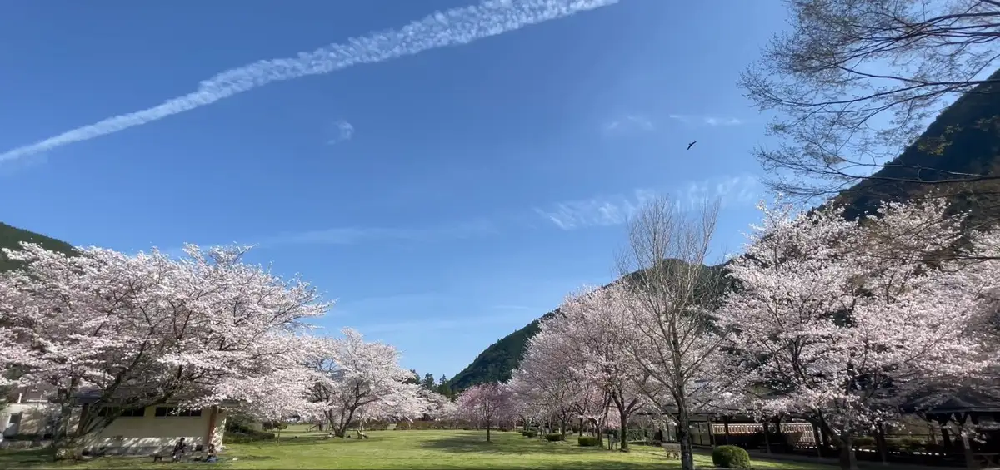
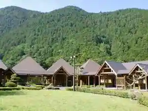
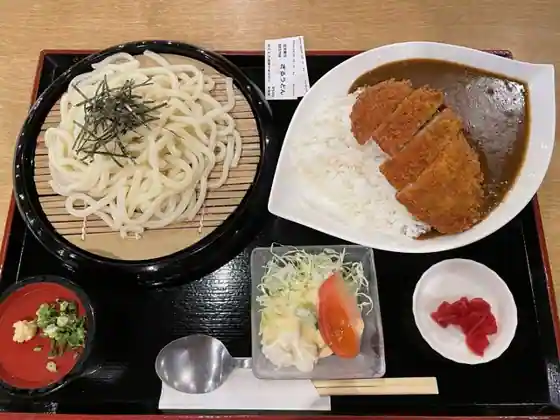
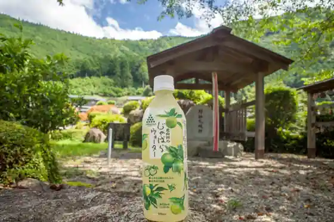
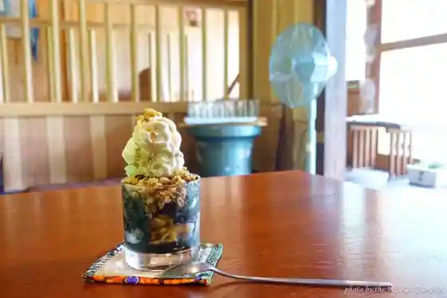
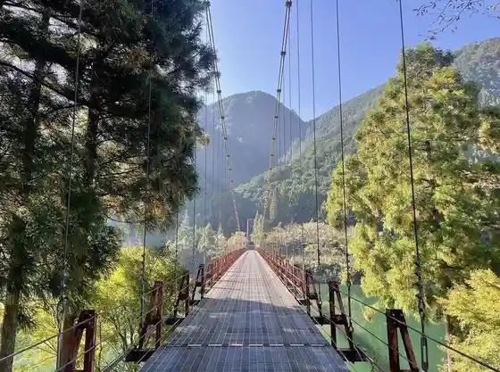

Kitayama, Wakayama: things to do, food and stays
Kitayama · Wakayama
Kitayama
Highlighted on the Wakayama map.

Stay
おくとろ温泉 やまのやど

Okutoro Onsen Yamanoyado
Inn at Okutoro Onsen in Shimoi, Kitayama.
Dining
おくとろ温泉やまのやど レストラン
Okutoro Onsen Yamanoyado Restaurant
じゃばら食堂

Jabara Shokudo
道の駅 おくとろ

Michi No Eki Okutoro
里山カフェ山花

Satoyama Cafe Yamahana
Sights
Kitayama Kawa Kanko Ikada Kudari / Kitayama Kanko Center
Okutoro Park
Ue Toro Hashi
